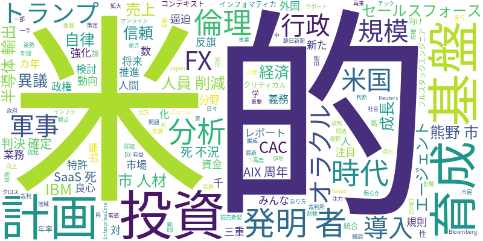

☁️ 今日のトレンドワード

📰 今日のピックアップニュース (10件)
AIがFX市場を分析
みんなのFXが提供するAI分析レポートでは、最新の市場動向をAIが詳細に分析し、投資家にとって有益な情報を提供します。日々の変動を的確に捉え、次の一手をサポートします。
AI投資でオラクル人員削減
オラクルが、AI分野への大規模投資に伴う資金逼迫のため、数千人規模の人員削減を計画していることが明らかになりました。戦略的な再編成が進行中です。
米、AI半導体輸出規制強化へ
米国政府は、AI半導体の輸出に関する新たな規則の検討に入りました。将来的には、外国企業による対米投資の義務化も視野に入れており、AI分野における国際的な影響が注目されます。
米AI企業、軍事利用に倫理問題提起
一部の米AI企業が、トランプ政権下でのAIの軍事利用に対し、倫理的な観点から反旗を翻しました。「良心に従い」という姿勢で、AI技術の倫理的なあり方を問う動きが広がっています。
熊野市、AI人材育成と行政導入へ
三重県熊野市は、AI人材育成のための3カ年計画を策定し、行政業務へのAI導入を進めます。地域社会のDX推進と市民サービスの向上を目指します。
AIは発明者と認めず、判決確定
「発明者はAIである」という特許出願を巡る裁判で、判決が確定しました。裁判所は、発明者として認められるのは人間に限られるとの判断を下しました。
セールスフォース、AIエージェント基盤強化
セールスフォースは、インフォマティカとの統合により、AIエージェント向けの「信頼できるコンテキスト基盤」を提供開始しました。これにより、より高度で信頼性の高いAI活用が可能になります。
CAC、AI活用で売上成長目指す
CACは、AI技術の活用とフルスタックエンジニアの育成に注力し、売上高の年率5〜6％成長を目指す計画を発表しました。AIによる事業拡大を推進します。
IBM、AIX 40周年と自律的基盤
IBMは、AIXの40周年を発表しました。AIクリティカル時代に向けて、自律的な基盤の重要性を強調し、将来のITインフラの進化を示唆しています。
「SaaSの死からAI不況」論に異議
米国で広がる「SaaSの死からAI不況」という悲観的な見方に対し、経済学の常識に反するという異議が唱えられています。AI時代における経済の新たな動向に注目が集まっています。
今日のAI・テック業界は、AI技術の発展と社会実装が加速する一方で、その倫理的な側面や経済への影響が多角的に議論されています。オラクルや米国のAI半導体輸出規制の動きは、AI投資の激化と国際的な規制強化の兆候を示唆しています。また、AIを軍事利用する倫理的な問題提起や、特許におけるAIの発明者認定を巡る判決は、AIと人間の関係性、そして知財権のあり方に新たな問いを投げかけています。国内では、熊野市がAI人材育成と行政導入を進めるなど、地域レベルでのDX推進も活発化しています。セールスフォースやCACといった企業は、AIを活用したサービス提供や人材育成を通じて、事業成長を目指しており、AIがビジネスの核となりつつある現状が伺えます。一方で、AI不況論への異議など、AI経済の将来像についても活発な議論が展開されており、AIを取り巻く環境は急速に変化し続けていると言えるでしょう。